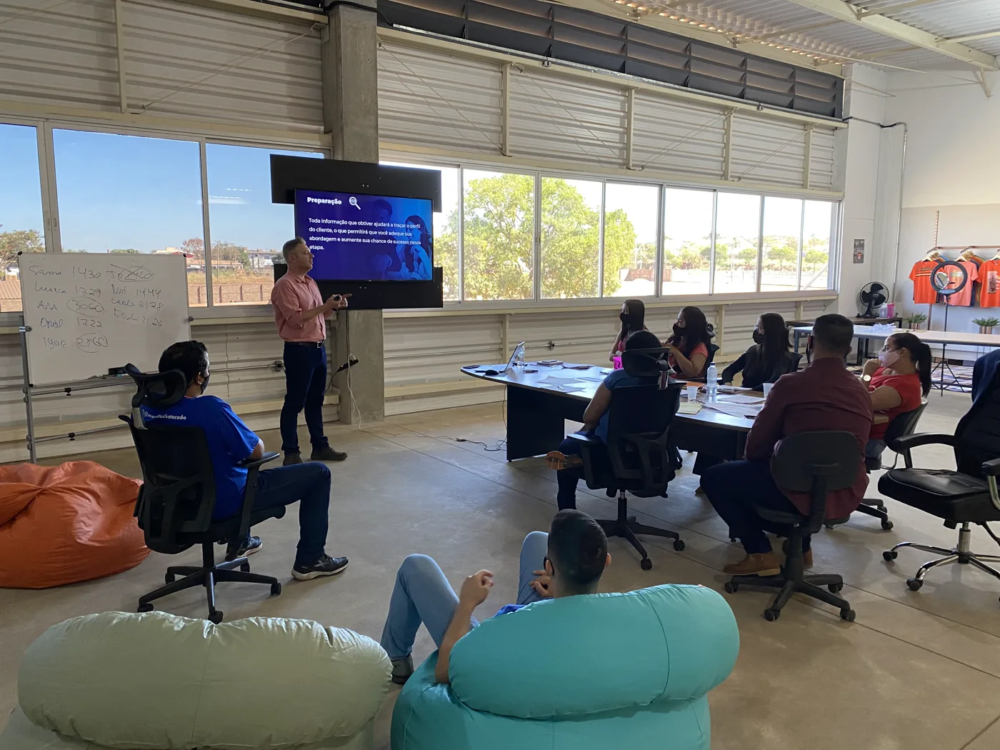

Bastidor
Girumo™
Por que Girumo
Do trabalho manual
pra operação que
roda
.
O símbolo é um
deslocamento
: duas etapas separadas por uma única passagem. É a virada que a gente viveu no atacado — e transformou em sistema.
Bastidor · treinamento do time
Girumo
Gi-ru-mo